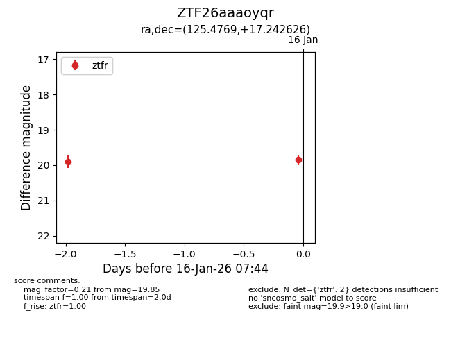
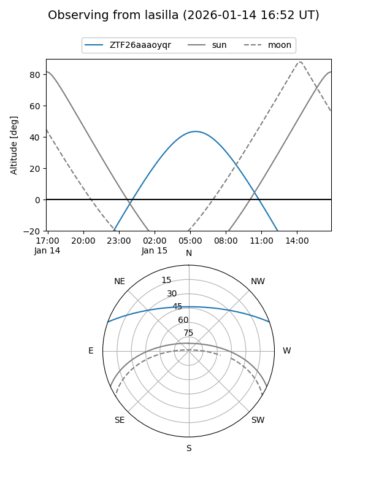
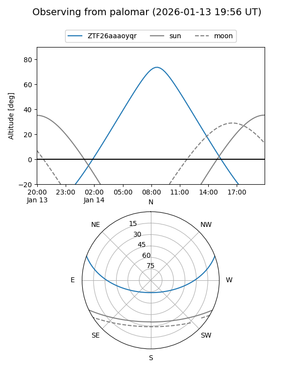
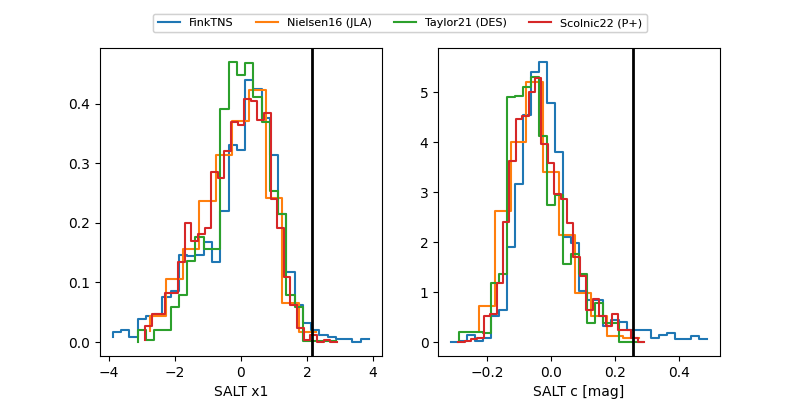

ZTF26aaaoyqr
Target ZTF26aaaoyqr at 2026-01-25 08:51
Aliases and brokers:
FINK: link
Lasair: link
ALeRCE: link
alt names
ZTF26aaaoyqr (ztf,fink_ztf)
Coordinates:
equatorial (ra, dec) = 125.4769,+17.24263
equatorial (HMS+DMS) = 08:21:54.46,+17:14:33.45
galactic (l, b) = (206.6962,+27.51935)
Flags:
Photometry:
last ztfr=20.05
4 ztfr detections
Lightcurve

Visibility


Additional plots
